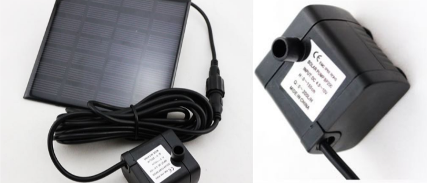
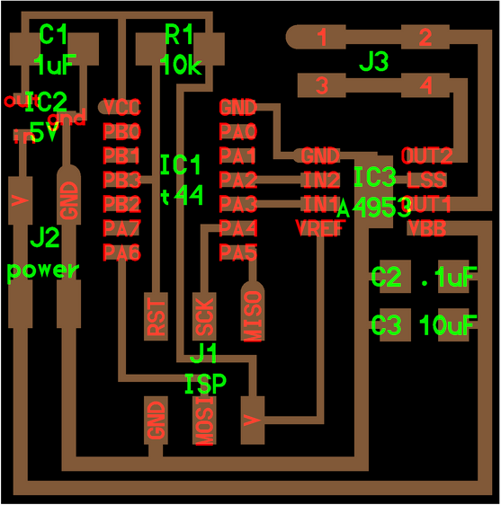
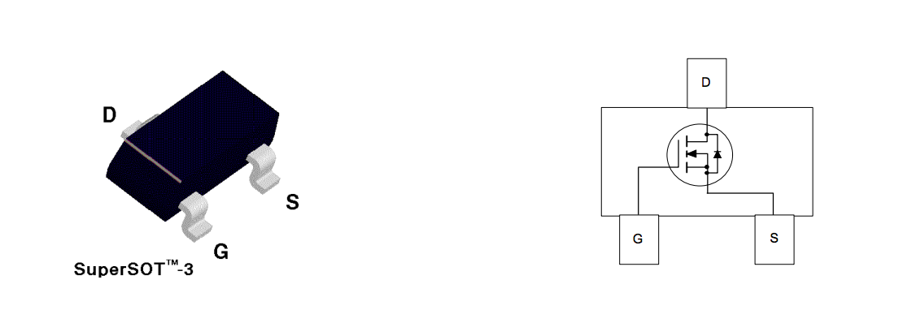
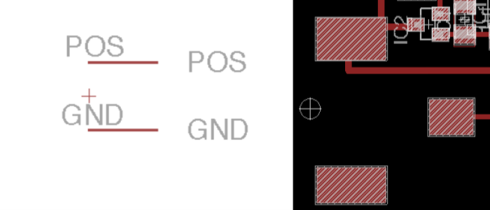
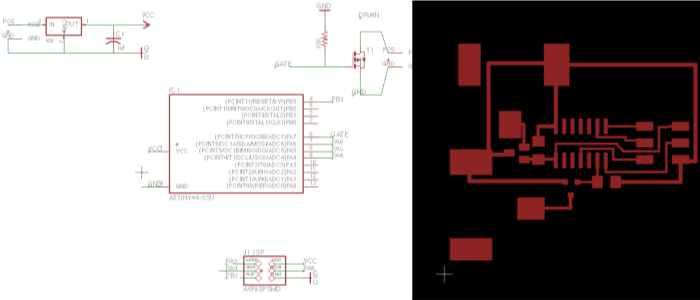
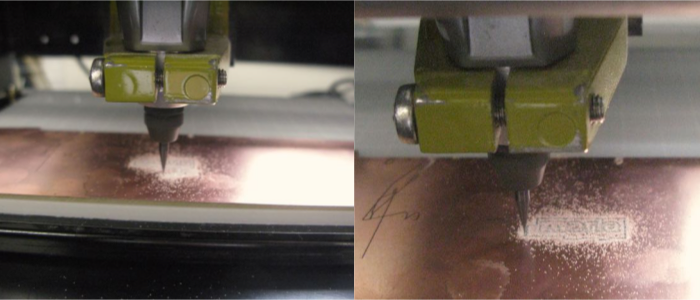
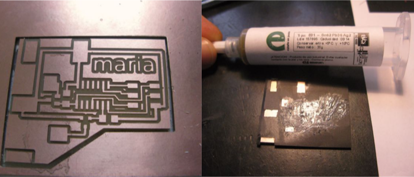
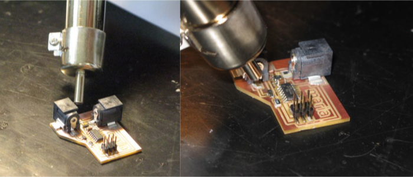
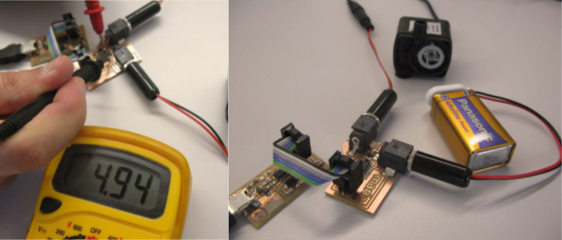

WATER PUMP
This week our assignment was to design a board, add an output device and get it to do something.
I chose use a DC motor as an output, since I will be needing a water pump for my final project, a vertical hydroponic garden.
I will be using a solar-powered water pump, as I won't have an energy source in the balcony where the garden will be set up. The pump is a "made-in-china" BP200, with the following specs:
- Maximum flow rate 150 litres per hour
- Maximum water lift approx 70cm
- Power consumption:7V/160mA
- Solar panel 4.5V/~10V
- Solar panel dimensions 180mm x 120mm
For my hydroponic system, I need the water to be pumped from the bottom container through the NFT trays about once every half hour. So my goal this week is to make the motor run with a timer.
DESIGNING THE CIRCUIT
I took Neil's h-bridge board as starting point for my board design. But since I didn't need my motor to run forwards and backwards, I was going to use a N-mosfet instead of an h-bridge. Despite its tiny size, the mosfet lets you source and sync a lot of current. These transistors require a positive gate voltage to turn “ON” and a zero voltage to turn “OFF”, working like a kind of switches. I placed the 3-legged mosfet between my Attiny44 micro-controller and the jack plug connecting to the DC motor. It would bring up the 5V current coming out of the Attiny to the 10V I needed to make the motor move.
I was unable to find the Jack plug component we have at Fablab EDP in any existing Eagle library, so they had to be designed from scratch. I found a youtube tutorial that explains how to do this:
creating a new library part in Eagle
I use the component's datasheet to find the right-size drawing of the pads. This is the new component created:
Once I had the pads designed, my circuit was ready to be milled. Here is final my board design:
MILLING THE BOARD
I uploaded the .png files I exported from Eagle into fabmodules and the milling went pretty smoothly.
I also exported an image of my circuit's pads, so I could cut up a vinyl mask to apply the soldering paste, as I had done in previous weeks. After cleaning up the board with steelwool and washing it up with water and soap, I started adding my components.
A little heat gun to turn the solder paste hard and shinny
And the board was mounted and ready!
I then soldered the two Jack plugs to the battery and the DC motor to connect them to the board. I used a 9V battery this week to test the system, but will replace it with a solar panel (which will in turn charge a lithium battery) for the final project.
I checked the current flow on different parts of the board and everything seemed to be ok. I then plugged the ISP to the board, it was ready to be programmed.
PROGRAMMING
(to be continued....)